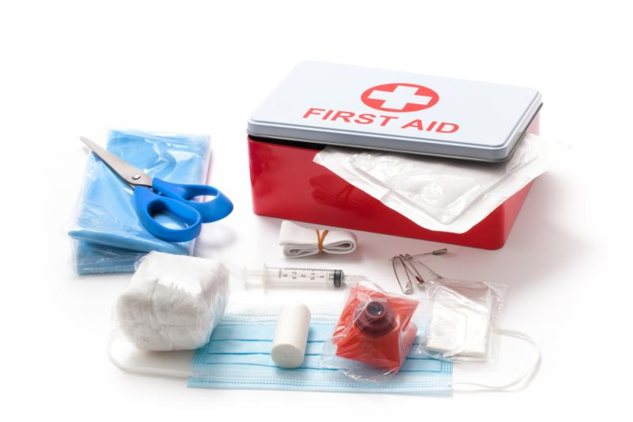

اسعاف الجروح
إن الغرض الأساسي في اسعافات الجروح هو ايقاف النزيف وحماية الجرح من التلوث ويتم ذلك بالضغط المباشر على الجرح بقطعة قماش نظيفة ومعقمة. ولا يجب ربط أي حبال على العضو المجروح بهدف إيقاف النزيف لأنه يسبب قطعاً كاملاً للدورة الدموية مما يسبب مضاعفات أكبر، يجب الحرص على تعقيم الجرح وتحديد إذا ما كان مسبب الجرح ملوثاً أم نظيفاً والحرص على أخذ حقنة مضاد الكزاز في حال كان الجرح أو المسبب له ملوثاً.
الصفحة الرئيسية